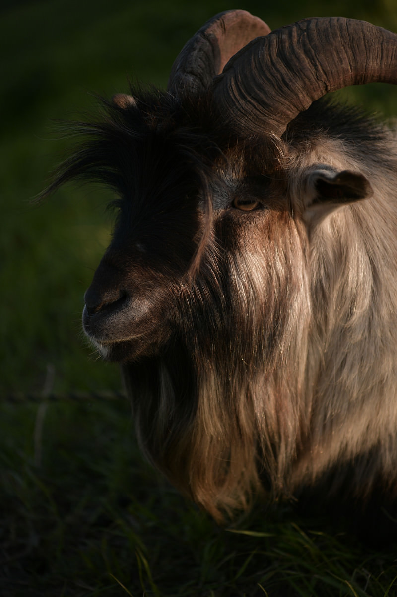

ABOUT

-
名前
脇井 裕太 -
性格
好きな物に関して一直線。
集中しすぎて周りが見えなくなることも多少あります。
慣れないうちは余り会話をしないけれど、
慣れてしまうと よく喋る様になります。 -
経歴
演劇俳優科、声優コースの専門学校に通っており、 -
スキル
- Illustrator ★★★★
- Photoshop ★★★★
- HTML+CSS ★★
- JavaScript/jQuery ★★★
- Direction ★★
-
項目
好きな音楽は幅広く、邦楽全般から洋楽、
民族音楽と色々聞いたりしております。
最近のブームはケルト音楽です
山羊を多用している理由は、特に好きと言うわけでなく
自分が山羊座だからです。
そこで自己の表現の楽しさを学びました。
後にバンド活動へと興味が移り、
ヴォーカルを担当し、オリジナル曲をメインにして活動。
7年ほど活動した後に解散。就職をしようと思い、クリエイティブな活動が好きなことと、PCを扱ってきた年数が長かったこと、絵も好きだったのでWebデザイン、グラフィックデザインの道に進もうと決心して、職業訓練校へと通うことを決めました。